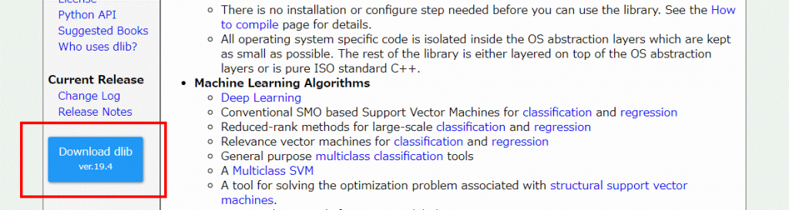

Problem
OpenCVには顔検出用の関数があるが、どうにも精度が良くないときがある。
そこで最近名前を聞くようになったdlibを使って見ることにする。
ただ、C#のラッパーなどは出回っておらず、C++から呼び出す泥臭いことが必要な模様。
ただ、ソースのサンプルが豊富なので、試してみるのは簡単そう….
と思っていましたがそうでは無かったです。
Preparation
ソース
まずはソースをダウンロード。
ページ左下の青いボタンがダウンロードになります。2017/07/05時点の最新版は19.4です。

ダウンロード後、任意の場所に展開します。
ここでは、D:\Works\Lib\DLib\19.4とします。
配下には下記のファイル、フォルダが展開されます。
{kind=link}
- dlib
- docs
- examples
- python_examples
- tools
- CMakeLists.txt
- documentation.html
- MANIFEST.in
- README.md
- setup.py
CUDA
dlibはCUDAを利用することで性能を大幅に向上させることが出来ます。
ただし、利用できるCUDAは7.5以降になります。今回は8.0を選択。
ダウンロードは下記になります。
今回はWindows 10用のインストーラを入手します。
{kind=link}
パッチもダウンロードできるようなので、そちらもダウンロードします。
バージョンは異なりますが、インストールは下記を参考にできます。
cuDNN
CUDAを利用するにはcuDNNが必要です。
インストールしたCUDAに合わせたバージョンを使います。6.0はdlibで利用できないので、5.1を利用します。
ダウンロードは下記になります。
NVIDIAの開発者登録が必要ですので、登録を済ませておいてください。
入手や展開は下記を参考にできます。
今回は、D:\Works\Lib\NVIDIA\cuDNN に展開します。
OpenCV
下記からインストーラをダウンロードしてインストールしておきます。2017/07/05の時点で最新は3.2.0になります。
今回は、D:\Works\Lib\OpenCV\opencv-3.2.0 に展開します。
CMake
Visual Studioのソリューションファイルを生成するために必要です。
下記でダウンロードしインストールします。2017/07/05時点の最新の安定版は3.8.2です。
インストール時、CMakeを環境変数PATHに追加するか選択できますが、そこは好みで。
Visual Studio
ビルドに使います。当たり前かもしれませんが、これがくせ者。
まず、dlibが対応しているCUDAは7.5以降になります。今回は8.0にします。
しかし、8.0に対応しているのはVisual Studio 2015以前です。
2017は 対応していません
Build with CUDA
まずコマンドプロンプトで、dlibの展開フォルダを開きます。
なお、buildフォルダの名前は自由です。
1 | D:\Works\Lib\DLib\19.4>cd examples |
しかし、Cmakeが失敗します。
ネットを見ると、**-DCMAKE_PREFIX_PATH** に cuDNN のルートフォルダを指定する、みたいなことが書いてありますが、これでは私の環境ではダメでした。
解決策は、cuDNN内の
- cuda\include\cudnn.h
- cuda\lib\x64\cudnn.lib
を、それぞれ
- C:\Program Files\NVIDIA GPU Computing Toolkit\CUDA\v8.0\include
- C:\Program Files\NVIDIA GPU Computing Toolkit\CUDA\v8.0\lib\x64
にコピーします。
その後、buildフォルダ内を削除し、先のコマンドを実行します。
1 | D:\Works\Lib\DLib\19.4\examples\build>"C:\Program Files\CMake\bin\cmake.exe" -G "Visual Studio 14 2015 Win64" -DCOMPILER_CAN_DO_CPP_11=ON -DOpenCV_DIR=D:\Works\Lib\OpenCV\opencv-3.2.0\build .. |
CMakeでVisual Studioのソリューションファイルの生成に成功しましたので、下記のようにビルドします。
1 | D:\Works\Lib\DLib\19.4>"C:\Program Files\CMake\bin\cmake.exe" --build . --config Release |
Build without CUDA
もし、CUDAを無効にしたいなら
1 | D:\Works\Lib\DLib\19.4>cd examples |
とします。
この際、cmakeを実行するフォルダを build フォルダと別名にしておかないと、CUDAを有効にしたバイナリが上書きされますので注意です。
ビルドは同様に、
1 | D:\Works\Lib\DLib\19.4\examples\build_cuda_off>"C:\Program Files\CMake\bin\cmake.exe" --build . --config Release |
とします。